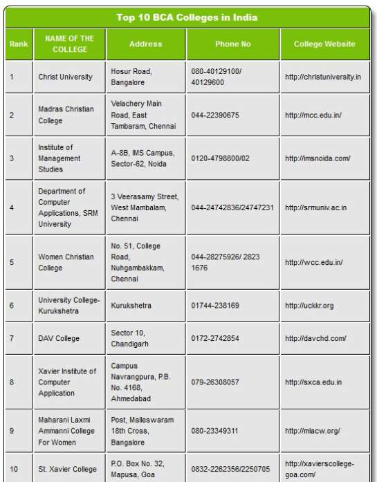

About BCA Course
BCA course Details
- BCA eligibility criteria is 50% marks in 10+2 or equivalent examination with computer application/science as an additional subject.
- BCA fees range from INR 2Lakhs to 3Lakhs depending on the university from where the applicant wants to pursue the course.
- For studying BCA From Abroad, students will need to apply for language tests such as IELTS, PTE, or TOEFL, along with other eligibility tests such as GRE, GMAT, etc.
- BCA Online Courses are also available in various online portals like Coursera, edX, etc.
- BCA Syllabus includes subjects based on programming and networking. Some of the common subjects that students will come across during the BCA courses are Hardware Lab, Operating systems, Data structures, computer networks, OOAD Using UML, Client-Server Computing, etc.
- For students who are determined to pursue MCA after BCA can directly opt for the BCA-MCA Integrated course which is only offered by a few institutes in India.
- After BCA, students can secure a job as a software developer, System Analyst, IT Technical Support Developer, etc., across the leading tech companies with an average salary of INR 2.5 LPA to INR 6 LPA.

Know More....